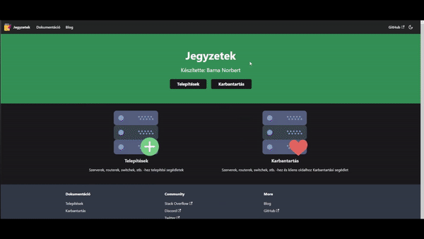

A projekt lényege, hogy a jegyzeteimet telepítésekről (Linux, Windows), megoldott problémákról vagy bármi másról egy helyre gyűjtsem, dokumentáljam.
Az alap ötlet Github repo volt, ami nem egy szörnyű ötlet, de erre vannak milliószór jobb megoldások.
(Régi projekt itt található.)
Ilyen pl. docusaurus, egy kiváló node.js-ben írt static-site generator, és kifejezetten dokumentációra fejlesztették.
Ez a projekt a leghosszabb távú, hiszen a jövőben is érdemesnek tartom frissíteni.
Projekt a https://barnanorbert19.github.io/Notes webhelyen található.
